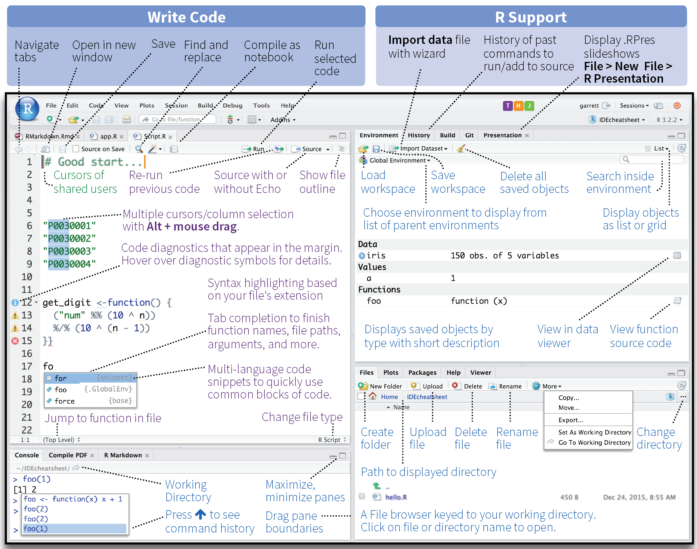

View on GitHub
File an issue
Download and install the appropriate version of R.
Rather than using the default R interface, we recommend downloading RStudio. RStudio is an integrated development environment (IDE) built specifically to make a range of tasks easier in R.
For new coders, it may be important to stress that R and RStudio are not the same thing. R is a programming language and can be used without RStudio. RStudio is a program designed to provide a graphical interface that allows one to write code, view data, and render visualizations, among other convenient features.
If you aren’t yet familiar with RStudio, take a minute to familiarize yourself with the interface with this short tour of the program. You should be comfortable with each pane and its functions, as well as understand the difference between writing code in R scripts versus entering code into the console.
Here’s a sneak peak of the RStudio user interface:
Figure 2.1: CC BY 4.0, modified from the full RStudio IDE cheatsheet.
Brown University students can download the most recent version of SAS (pronounced “sass”) from Brown’s software catalogue. You must log in to your student account to download the necessary software.
Windows and Linux users should download the SAS 9.4 version that corresponds to their operating system as well as SAS Enterprise Guide. While SAS comes with a user interface, Enterprise Guide in Windows serves a similar purpose for SAS as RStudio does for R. Acquaint yourself with its interface.
Unfortunately, Mac users will need to use the server-based version of SAS University because local downloads of SAS 9.4 and SAS Enterprise Guide are not available for macOS.